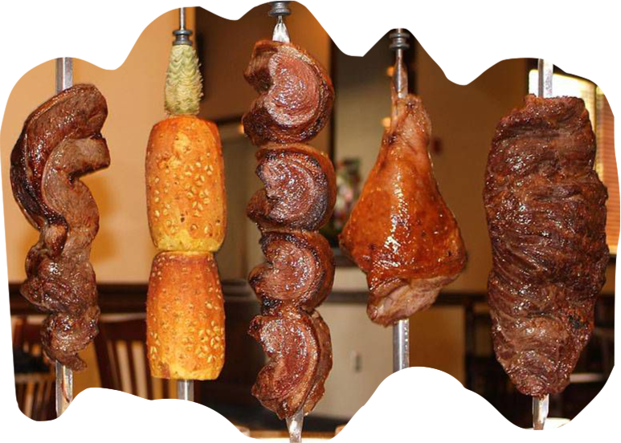
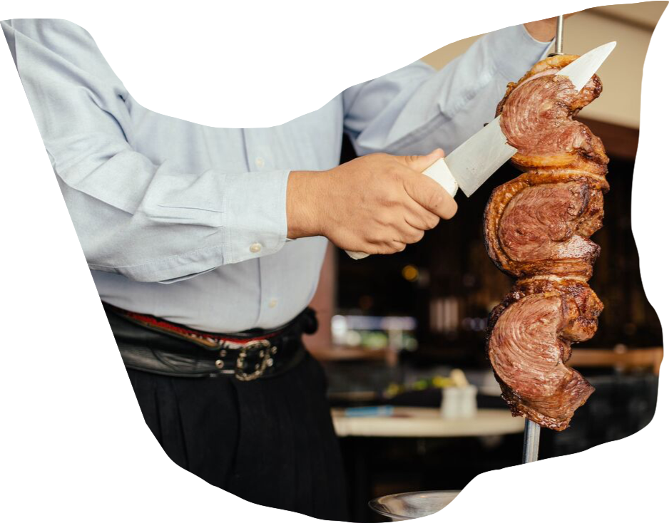

Salad Bar?! F-Yes!!!
Correct!
Alot of people go crazy at the salad bar and fill up there. Instead of this you should mostly be eating the meat.
Seriously?
The whole reason you came here was for Steak! hence the name Brazilian Steak House! You're not a bunny rabbit chill with the salads

Now we are ready do order our appetizers! Should we yell it and hope someone hears us?
Yes!
When you flip over your card to green, it indicates to the waiter that you are ready to start. They will then bring over your starters. As well when you are ready to get some more meat the carver will come to you if your card is flipped over to green
This is just sad
You're at a steakhouse, not a jungle. Politley flip your card over to green, this will let waiter know you are ready for starters

Alright you finished your appetizers! The waiter comes by with some rotisery of meat and carves off a piece for you. Should you watch jaw agape as he cuts off a piece for you?
Right you are!
It will make things much easier for the carver if you assist him by holding the piece as he cuts it, so it doesn't just fall on the table.
Act like you've been somewhere before....
Grab the piece of meat with the provided tongs as your waiter carves the meat. You can assist him in this way.